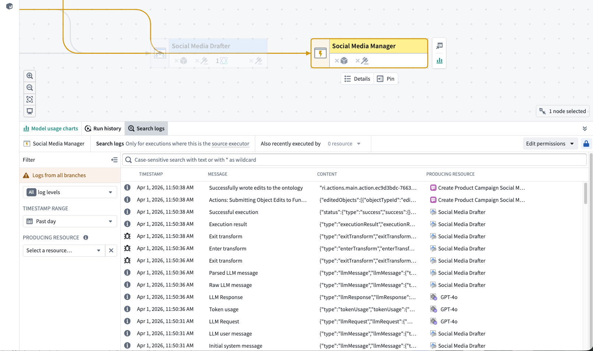
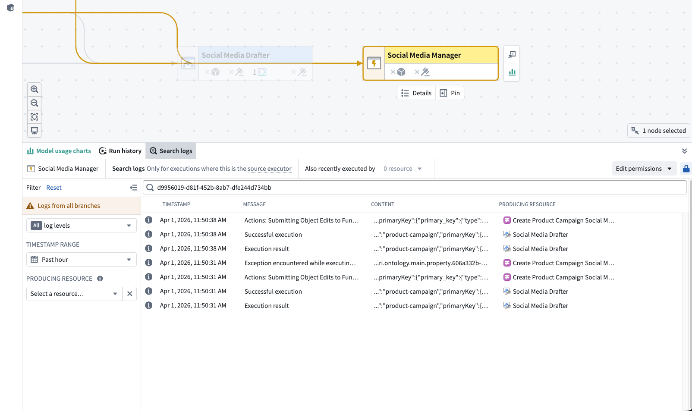
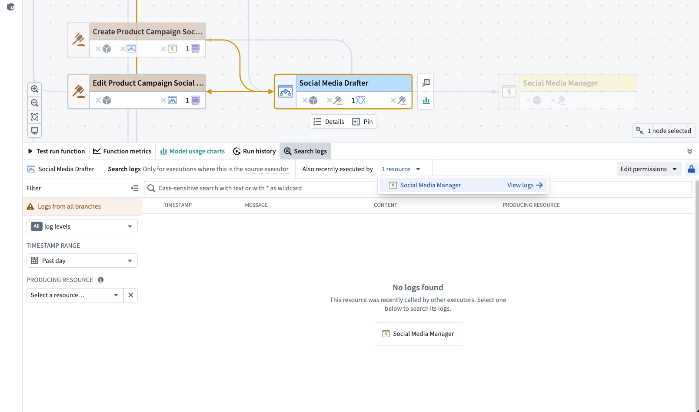
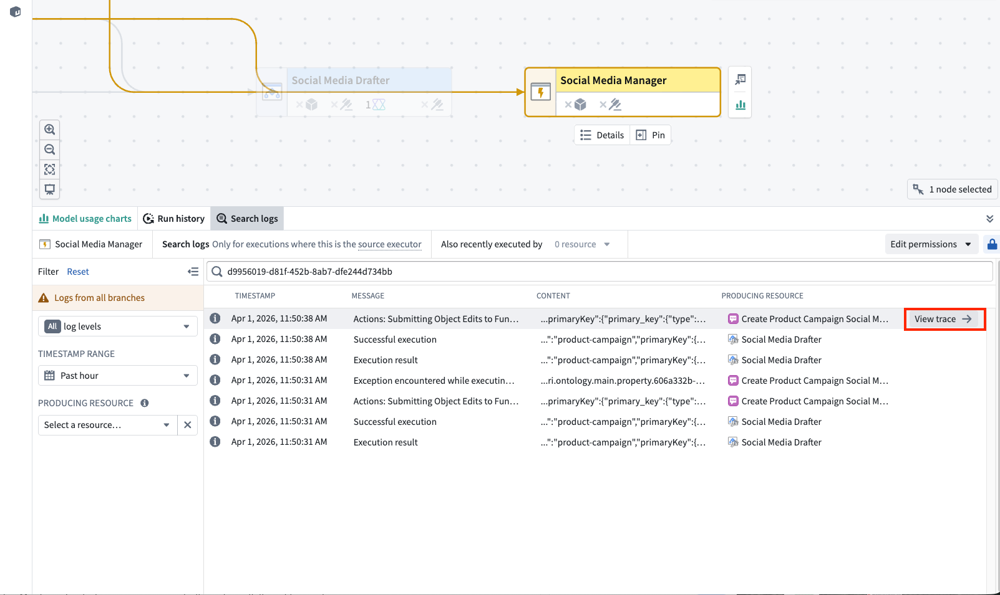
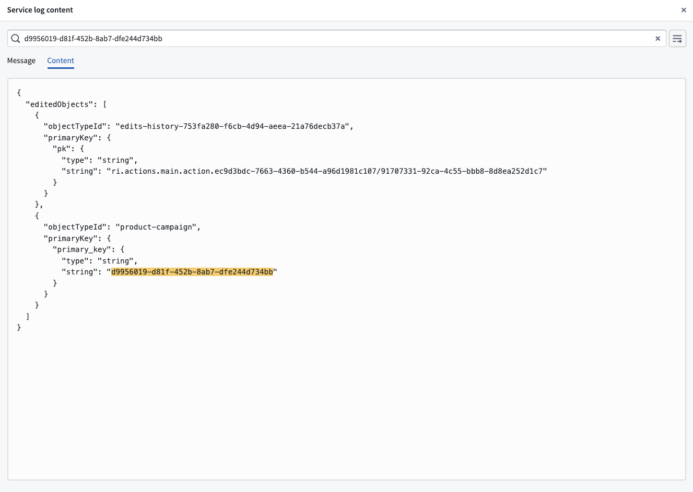
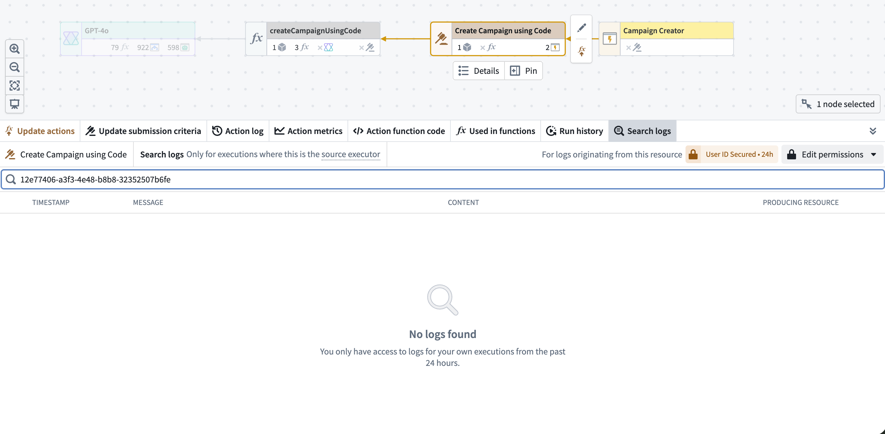

The Search logs tab in Workflow Lineage allows you to search across all service logs produced by a selected source executor over the past 30 days. Unlike the per-execution service logs view, log search aggregates logs from every execution originating from a given source executor, making it useful for investigating recurring errors or finding specific log messages across multiple runs.
A source executor is the first executable resource in the call chain and can be a function, action, automation, AIP logic, AIP agent, or model live deployment. When a function is backed by another resource, such as AIP logic, a language model, or an AIP agent, the log search panel displays the backing resource as the source executor rather than the underlying function.
To access log search:

The search bar at the top of the Search logs panel accepts text queries. Type a search term and the results will populate the results table. The search is case-sensitive and matches against the full log line, including both the Message and Content fields.
You can use * as a wildcard character to match any sequence of characters. For example:
connection failed matches log lines containing the exact phrase "connection failed"timeout*retry matches log lines containing "timeout" followed by "retry" with any characters in betweenError matches "Error" but not "error" or "ERROR"
The Search logs tab displays logs for executions where the selected resource is the source executor. Logs from executions where the resource was called by another resource are not included. In the example below, the function produced logs during execution but is not the source executor â it was called by an automation. Searching from the function returns no results; to find these logs, search from the automation node instead.
If no logs are found for the selected resource, the Search logs panel checks whether it was recently called by other source executors and displays them as suggestions. Select a suggested source executor to navigate to that node in the graph and search its logs instead. The panel header also displays an Also recently executed by indicator. You can select this indicator to see and navigate to source executors.

The filter sidebar on the left side of the Search logs panel allows you to narrow down log results. Select the filter icon to expand or collapse the sidebar. The following filters are available:
ERROR, FATAL, WARN, INFO, DEBUG, and TRACE. By default, all log levels are shown.Past 1 day or Past 1 hour, or specify a custom date and time range. The default range Past one day. The maximum selectable range is 30 days, matching the log retention period.When multiple filters are active, they are combined with AND logic; only log entries matching all selected filters are returned. Select Reset in the sidebar header to clear all filters and return to the default view.
Search results are displayed in a table sorted by timestamp, with the most recent logs appearing first. The table includes the following columns:
| Column | Description |
|---|---|
| Log level | A color-coded icon indicating the severity: red for ERROR and FATAL, orange for WARN, and neutral for INFO, DEBUG, and TRACE |
| Timestamp | The date and time the log entry was recorded |
| Message | The primary log message. Select the field to open a detail dialog |
| Content | Additional structured content, often in JSON format. Select the field to open a detail dialog |
| Producing resource | The resource that emitted the log entry |
Matching text from your search query is highlighted in the Message and Content columns.
When you hover over a log row, a View trace button appears on the right side of the row. Select this button to open the trace view for the execution that produced that log entry. This allows you to see the full execution timeline and identify where in the call chain the log was emitted.

Select any Message or Content cell to open a detail dialog with the full log entry. The dialog provides:

Log search covers the most recent 30 days of logs. Logs older than 30 days are automatically deleted and cannot be recovered. Results are loaded in pages of 100 entries. Scroll to the bottom of the table to load additional results. Logs are not streamed live; to view additional logs produced after the initial search, refresh the page.
Log search uses the same permission model as execution history. To search logs for a resource, you must have edit permission on the resource. If log access has been enabled for the source executor's project, and you have access to all the necessary markings, you can search logs across all executions. If log access has not been enabled, you can only search logs for your own executions from the past 24 hours, but edit permission on the resource is still required. On CBAC stacks, this self-execution exception does not apply; log access must be enabled to search logs.

For full details on log access configuration, see log permissions.